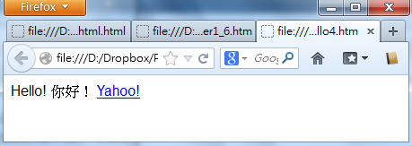
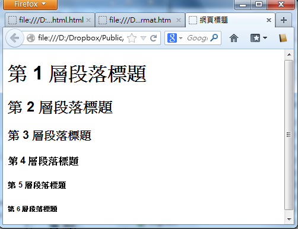
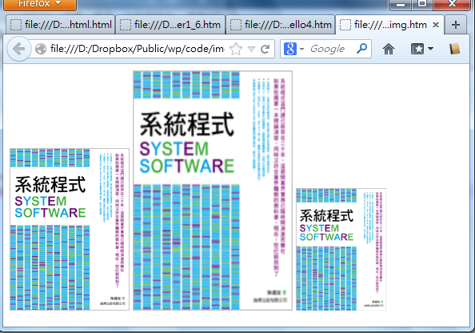
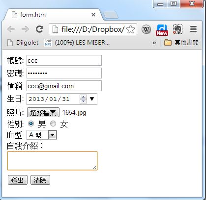

第 2 章 - HTML 網頁設計
HTML、CSS 與 JavaScript
HTML、CSS 與 JavaScript 是讓 Web Browser 運作的三大技術，要學會 Web 程式設計的第一步，就是要學會這三項技術，在本章中，我們將從最基礎的 HTML 開始。
如果您想要學習這些技術，筆者強烈的推薦您觀看 w3schools 這個網站，網址如下。
學習 HTML、CSS、JavaScript 的順序，最好先從 HTML 開始，因為 HTML 最簡單，而且是整個 Web 技術的表現語言，學會 HTML 之後就可以學習 CSS，看看如何對 HTML 進行格式化套表呈現的動作，然後再進一步學習 JavaScript 這個小型程式語言，以便讓網頁更加動態，增強網頁的的互動功能。
以下是 w3schools 當中這三個主題的網頁，如果您是一個程式設計師，相信您可以用很短的時間就學會這些主題。
- http://www.w3schools.com/html/default.asp
- http://www.w3schools.com/css/default.asp
- http://www.w3schools.com/js/default.asp
一但學會了 HTML、CSS、JavaScript 這三種技術，您就可以開始向 Server 端的技術邁進了。
簡易網頁
HTML 網頁是一種純文字檔案，您只要用記事本這樣的文字編輯器就可以輕易的編出來，以下是一個範例：
<html>
<body>
Hello!
</body>
</html>
檢視檔案：https://dl.dropbox.com/u/101584453/web/wp/code/hello1.htm
您可以看到在上述範例中，Hello! 訊息被夾在 <body> 與 </body> 中間，而外層又有 <html> 與 </html> 包覆，像這樣的結構稱為標記語言 (Markup Language)。
如果我們在上述文件中再加上一句 <a href="http://tw.yahoo.com/">Yahoo!</a> 這樣的標記，那麼網頁中將會出現 Yahoo! 這個詞彙，該詞彙通常是藍色文字，而且可以用滑鼠點擊，當您點擊之後網頁就會被導到 Yahoo 台灣的首頁，這種點選後會導入另一個網頁的機制是 Web 的最大特色，稱為 Hyperlink (超連結)，而那些被 <a> </a> 標記起來的文字，就稱為 Hyper Text (超文字)。
<html>
<body>
Hello!
<a href="http://tw.yahoo.com/">Yahoo!</a>
</body>
</html>
(筆者註：標記 a 當中的 href 是 Hyperlink Reference (超連結引用) 的縮寫，而 a 則是 anchor (錨) 的意思)。
檢視檔案：
而這也正是 HTML 之全名 Hyper Text Markup Language 的意義，也就是一種含有超連結的標記語言。
由於 HTML 標記語言是有層次性的，因此在排版時我們經常都會使用縮排以凸顯出這種層次感，例如以上的範例經過縮排之後就變成了如下的情況。
<html>
<body>
Hello!
<a href="http://tw.yahoo.com/">Yahoo!</a>
</body>
</html>
檢視檔案：
這樣的結構看起來更加一目了然，能夠凸顯出每個層次之間的包含關係。
HTML 的表頭
雖然上述範例已經是 HTML 網頁了，而且也通常可以正常檢視了，但是還不夠完整，一個完整的 HTML 網頁通常要包含足夠的表頭資訊，以便讓瀏覽器能正確的辨認這個網頁的類型與編碼方式，以下是一個範例：
<!DOCTYPE html>
<html>
<head>
<meta charset='utf-8'>
</head>
<body>
Hello! 你好！
<a href="http://tw.yahoo.com/">Yahoo!</a>
</body>
</html>
檢視檔案：

其中第一句的 <!DOCTYPE html> 是告訴瀏覽器，這個文件是一個 HTML 檔案，而 <meta charset='utf-8'> 這句話，則是告訴瀏覽器這個文件的編碼是用 UTF-8 的格式。
所以您必須將上述檔案，儲存成 unicode 的 UTF-8 格式，這樣網頁才能正確運作，否則就有可能出現亂碼的情況，以下是筆者使用 Notepad++ 設定 UTF-8 格式的情況。

格式化
從上述範例中，您可以看到即使我們在 HTML 的原始文字檔案中進行換行，但是呈現出來的結果卻沒有換行，如果您真的想要強制換行的話，在 HTML 當中必須用 <BR/> 這個標記，才能讓文字真正換行。
但是強制換行並不是一個好的寫法，比較好的方法是用段落標記 <p>...</p> 把您的段落包起來，這樣在段落結束後就會換行了。
另外、還有 <b>...</b> 標記 (也可以用 <strong> ... </strong>) 可以讓文字變粗體，而 <i>...</i> 指令則可以讓文字呈現斜體，<em> ... </em> 標記可以強調文字，而 <code>...</code> 可以讓文字以類似程式碼的字型輸出。
若要讓文字變成上標，可以用 <sup>...</sup>，或用 <sub>...</sub> 則可以讓文字變下標，以下範例綜合的呈現了這些格式化標記的結果。
<!DOCTYPE html>
<html>
<head>
<meta charset='utf-8'>
</head>
<body>
一般字體 (Plain Text) <BR/>
<i>斜體 (Italic)</i> <BR/>
<b>粗體 (Bold)</b> <BR/>
<p>
<strong>明顯 (Strong)</strong>
<em>強調 (Emphasized)</em>
</p>
<p>
這是 <sup>上標</sup> 與 <sub>下標</sub> 的顯示情況！
</p>
</body>
</html>
檢視檔案：

標題
HTML 的章節標題共有六種層次，從 h1 到 h6，通常 h1 代表最大的第一層標題，會用最大的字型顯示，而 h6 則是最小的第六層標題，會用最小的字型顯示。
<h1>第 1 層段落標題</h1>
<h2>第 2 層段落標題</h2>
<h3>第 3 層段落標題</h3>
<h4>第 4 層段落標題</h4>
<h5>第 5 層段落標題</h5>
<h6>第 6 層段落標題</h6>
而整個網頁的標題則是用 <title>...</title> 進行標記，如下所示。
<title>網頁標題</title>
以下是這些標題的使用範例，您可以點選看看。
檢視檔案：

影像 Image
在 HTML 中，要顯示影像或圖片，只要使用 <img src="圖片相對路徑"> 就行了。如果要指定大小，就可以加上 width 與 height 屬性，如以下範例所示。
<img src="F7501.gif"/>
<img src="F7501.gif" width="200" height="300"/>
<img src="F7501.gif" width="20%"/>
上述第一個指令 <img src="F7501.jpg"/> 會按照原圖大小顯示，而 <img src="F7501.jpg" width="300" height="500"/> 則會將圖形縮放到寬度 200，高度 300 的大小，最後一個用 20% 代表縮放到寬度為瀏覽器畫面視窗的百分之二十那麼大。
檢視檔案：https://dl.dropbox.com/u/101584453/web/wp/code/img.htm

評論：竟然趁機為自己的書打廣告，真是太惡劣了！....
表格 Table
在 HTML 當中、有很多排版都是使用表格的方式製作的，例如「側欄、上方橫幅」等等，表格的語法如以下範例所示。
<table>
<tr>
<th></th>
<th>欄 1</th>
<th>欄 2</th>
</tr>
<tr>
<th>列 1</th>
<td>1,1</td>
<td>1,2</td>
</tr>
<tr>
<th>列 2</th>
<td>2, 1</td>
<td>2, 2</td>
</tr>
</table>
表格的語法都是由 <table>...</table> 所夾住的，其中 <tr>...</tr> 會夾住一個列，而每個列又可以分成數個欄，這些欄可能用 <th>..</th> 或 <td>...</td> 夾住，其中 th 通常是用在標頭、而 td 則是用在內容。
檢視檔案：

項目 list
HTML 的項目是用 <li>...</li> 語法所框住的，如果在項目的外面加上 <ul>...</ul> ，那就會顯示無編號的項目清單，若加上 <ol>...</ol>，那就會顯示有編號的項目清單。
無編號項目清單：
<ul>
<li>項目 1</li>
<li>項目 2</li>
</ul>
有編號項目清單：
<ol>
<li>項目 1</li>
<li>項目 2</li>
</ol>
檢視檔案：

表單 Form
在 HTML 當中，表單 (Form) 是指可以讓使用者進行輸入的元件，其語法是用 <form> ...</form> 夾住一堆的輸入元件，這些輸入元件包含 input (輸入)、 textarea (文字區)、 select (選項) 等，其中的 input 還可以根據其 type 欄位顯示成 checkbox, color, date, datetime, datetime-local, email, file, hidden, image, month, number, password, radio, range, reset, search, submit, tel, text, time, url, week 等各種不同的輸入欄形式，以下是一個表單的範例。
<form action="signup" method="post">
帳號: <input type="text" name="user"/><br/>
密碼: <input type="password" name="password"/><br/>
信箱: <input type="email" name="email"/><br/>
生日: <input type="date" name="birthday"/><br/>
照片: <input type="file" name="picture"/><br/>
性別: <input type="radio" name="sex" value="male" checked/> 男
<input type="radio" name="sex" value="female"/> 女<br/>
血型: <select name="BloodType">
<option value="A">A 型</option>
<option value="B">B 型</option>
<option value="AB">AB 型</option>
<option value="O">O 型</option>
</select> <br/>
自我介紹： <br/>
<textarea name="AboutMe">
</textarea> <br/>
<input type="submit" value="送出"/><input type="reset" value="清除"/><br/>
</form>
檢視檔案：

在上述的範例中，當 submit 類型的送出鈕被按下後，瀏覽器會將這些填寫的資訊，以第一章所說的 GET/POST 方式，發送給伺服器，如果 method 欄位是 GET，那麼會採用在 HTTP 表頭網址處傳送 singup?user=xxx&password=xxx ..... 這樣的形式送出，這種方式會將密碼顯示在瀏覽器的網址列上，比較容易被看到，若 method 欄位是 POST，則會在 HTTP 表頭尾端加上 user=xxx&password=xxx ... 的資訊，不會在網址列上被看到。當然、如果有人監控網路上訊息的話，還是會看得到這些輸入資訊。
若要更安全，則必須採用 HTTPS 的 SSL 方式傳遞，這種方式會對訊息加密編碼，就比較不會有輸入訊息外洩的危險。
參考文獻
- W3School : HTML Turorial -- http://www.w3schools.com/html/default.asp